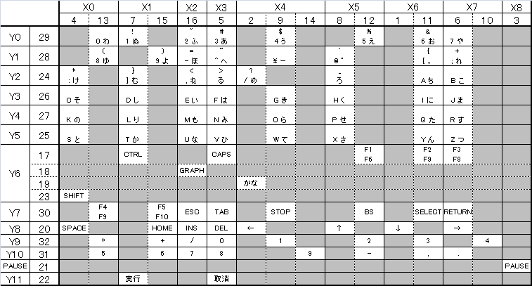

WXのキーボード
FS-A1WX系の機種で何回も分解を行っていると、キーボードのフレキシブルパターンがはがれ、キーボードがきかなくなることがあります。その場合、保守部品で下記の部品を入手、交換すれば直ります。
・品番 DFWV48C0116
・品名 フレキシブルパターンASSY
・価格 2,000円
ここまで詳しく知らなくても、単に「A1WX用のキーボードフレキシブルパターン」でも通じると思います。
故Mマガの1991年3月号でA1STに外付けキーボードを増設する記事がありましたが、あの記事どおりに行っても実行キーなどの割り当てがうまくいきません。カットしなければならない場所が2ヶ所あります。写真を見ればなんとか分かりますが、記事の中では触れられていません。また、ジャンパの位置も間違っています。写真では”34”という数字の左下の部分につながっていますが、実際はその右隣とつながなければなりません。
2014/02/23 追加
キーボードが効かなくなる要因はいくつかあるようです。
1.パターンの劣化
フレキシブルパターンは基本的に伝導体を塗布しているので、使用もしくは経年変化によって劣化してしまうようです。その場合、パターンの表面を名刺などでこするとよいという噂(?)があります。詳細はMSX研究所日記さんのところにあったはずですが見つかりませんでした(^-^;
2.パターンの剥離
パターンが切れたりした場合、アルミを貼って修理するという話をよく聞きますが、最近は「コンダクティブペン」とか「導電ペイントペン」というものがあり、これでも修理出来ます。これは中々便利ですが、ペン先が太めなのではみ出さないように注意しないとならないのと、厚みもあるので塗った後、ちょっとならして薄くしないとキーが常に押された状態になってしまいます。
3.コネクタのさび
私はこれで長いこと悩みました。コネクタの内側が見えず、無水アルコールなどでいくら掃除しても直りませんでしたが、アルミの薄い板とかでこすったら直りました。ロジカルなキーマトリクスはX0-X7とY0-Y11の組み合わせ（96通り）とX8とPAUSEの組み合わせで、X軸が9、Y軸が13本なのですが、実際のA1WXのキーボードではフレキシブルパターンを一筆書きにするために、X軸が17、Y軸が17に分かれています。（X0だけで2ライン使っていたりします。）
17x17のキーマトリクスは以下の通りです。

簡単に説明しますと、X4の2番のラインに問題がある場合、"/ め"と"カナ"と"←"が効かなくなるということになります。（断線位置などにもよります。）